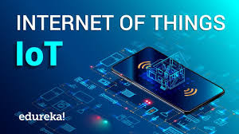

Internet of Things
links
What is the Internet of Things?
In the broadest sense, the term IoT encompasses everything connected to the internet, but it is increasingly being used to define objects that "talk" to each other. "Simply, the Internet of Things is made up of devices – from simple sensors to smartphones and wearables – connected together," Matthew Evans, the IoT programme head at techUK, says
By combining these connected devices with automated systems, it is possible to "gather information, analyse it and create an action" to help someone with a particular task, or learn from a process. In reality, this ranges from smart mirrors to beacons in shops and beyond.
